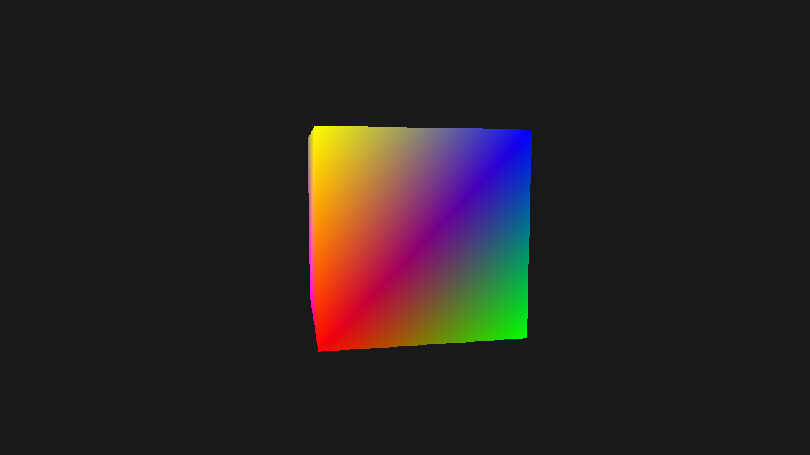

Spinning Cube
In this tutorial, you'll render a spinning 3D cube with per-vertex colors. This introduces constant buffers for uploading transformation matrices, and per-frame updates for animation.
Overview
This tutorial covers:
- Building Model/View/Projection transformation matrices
- Creating and updating a constant buffer each frame
- Using back-face culling and depth testing for 3D rendering
- Animating object rotation over time in the
Updateloop
The Renderer Class
Create the file Renderers/SpinningCubeRenderer.cs:
namespace ZenithTutorials.Renderers;
internal unsafe class SpinningCubeRenderer : IRenderer
{
private const string ShaderSource = """
struct VSInput
{
float3 Position : POSITION0;
float4 Color : COLOR0;
};
struct PSInput
{
float4 Position : SV_POSITION;
float4 Color : COLOR;
};
struct Constants
{
float4x4 Model;
float4x4 View;
float4x4 Projection;
};
ConstantBuffer<Constants> constants;
PSInput VSMain(VSInput input)
{
float4x4 mvp = mul(mul(constants.Model, constants.View), constants.Projection);
PSInput output;
output.Position = mul(float4(input.Position, 1.0), mvp);
output.Color = input.Color;
return output;
}
float4 PSMain(PSInput input) : SV_TARGET
{
return input.Color;
}
""";
private readonly Buffer vertexBuffer;
private readonly Buffer indexBuffer;
private readonly Buffer constantsBuffer;
private readonly ResourceLayout resourceLayout;
private readonly ResourceTable resourceTable;
private readonly GraphicsPipeline pipeline;
private float rotationAngle;
public SpinningCubeRenderer()
{
Vertex[] vertices =
[
new(new(-0.5f, -0.5f, 0.5f), new(1.0f, 0.0f, 0.0f, 1.0f)),
new(new( 0.5f, -0.5f, 0.5f), new(0.0f, 1.0f, 0.0f, 1.0f)),
new(new( 0.5f, 0.5f, 0.5f), new(0.0f, 0.0f, 1.0f, 1.0f)),
new(new(-0.5f, 0.5f, 0.5f), new(1.0f, 1.0f, 0.0f, 1.0f)),
new(new(-0.5f, -0.5f, -0.5f), new(1.0f, 0.0f, 1.0f, 1.0f)),
new(new( 0.5f, -0.5f, -0.5f), new(0.0f, 1.0f, 1.0f, 1.0f)),
new(new( 0.5f, 0.5f, -0.5f), new(1.0f, 1.0f, 1.0f, 1.0f)),
new(new(-0.5f, 0.5f, -0.5f), new(0.5f, 0.5f, 0.5f, 1.0f))
];
uint[] indices =
[
0, 1, 2, 0, 2, 3,
5, 4, 7, 5, 7, 6,
4, 0, 3, 4, 3, 7,
1, 5, 6, 1, 6, 2,
3, 2, 6, 3, 6, 7,
4, 5, 1, 4, 1, 0
];
vertexBuffer = App.Context.CreateBuffer(new()
{
SizeInBytes = (uint)(sizeof(Vertex) * vertices.Length),
StrideInBytes = (uint)sizeof(Vertex),
Flags = BufferUsageFlags.Vertex | BufferUsageFlags.MapWrite
});
vertexBuffer.Upload(vertices, 0);
indexBuffer = App.Context.CreateBuffer(new()
{
SizeInBytes = (uint)(sizeof(uint) * indices.Length),
StrideInBytes = sizeof(uint),
Flags = BufferUsageFlags.Index | BufferUsageFlags.MapWrite
});
indexBuffer.Upload(indices, 0);
constantsBuffer = App.Context.CreateBuffer(new()
{
SizeInBytes = (uint)sizeof(Constants),
StrideInBytes = (uint)sizeof(Constants),
Flags = BufferUsageFlags.Constant | BufferUsageFlags.MapWrite
});
resourceLayout = App.Context.CreateResourceLayout(new()
{
Bindings = BindingHelper.Bindings
(
new ResourceBinding() { Type = ResourceType.ConstantBuffer, Count = 1, StageFlags = ShaderStageFlags.Vertex }
)
});
resourceTable = App.Context.CreateResourceTable(new()
{
Layout = resourceLayout,
Resources = [constantsBuffer]
});
InputLayout inputLayout = new();
inputLayout.Add(new() { Format = ElementFormat.Float3, Semantic = ElementSemantic.Position });
inputLayout.Add(new() { Format = ElementFormat.Float4, Semantic = ElementSemantic.Color });
using Shader vertexShader = App.Context.LoadShaderFromSource(ShaderSource, "VSMain", ShaderStageFlags.Vertex);
using Shader pixelShader = App.Context.LoadShaderFromSource(ShaderSource, "PSMain", ShaderStageFlags.Pixel);
pipeline = App.Context.CreateGraphicsPipeline(new()
{
RenderStates = new()
{
RasterizerState = RasterizerStates.CullBack,
DepthStencilState = DepthStencilStates.Default,
BlendState = BlendStates.Opaque
},
Vertex = vertexShader,
Pixel = pixelShader,
ResourceLayout = resourceLayout,
InputLayouts = [inputLayout],
PrimitiveTopology = PrimitiveTopology.TriangleList,
Output = App.FrameBuffer.Output
});
}
public void Update(double deltaTime)
{
rotationAngle += (float)deltaTime;
Matrix4x4 model = Matrix4x4.CreateRotationY(rotationAngle) * Matrix4x4.CreateRotationX(rotationAngle * 0.5f);
Matrix4x4 view = Matrix4x4.CreateLookAt(new(0, 0, 3), Vector3.Zero, Vector3.UnitY);
Matrix4x4 projection = Matrix4x4.CreatePerspectiveFieldOfView(float.DegreesToRadians(45.0f), (float)App.Width / App.Height, 0.1f, 100.0f);
constantsBuffer.Upload([new Constants() { Model = model, View = view, Projection = projection }], 0);
}
public void Render()
{
CommandBuffer commandBuffer = App.Context.Graphics.CommandBuffer();
commandBuffer.BeginRenderPass(App.FrameBuffer, new()
{
ColorValues = [new(0.1f, 0.1f, 0.1f, 1.0f)],
Depth = 1.0f,
Stencil = 0,
Flags = ClearFlags.All
}, resourceTable);
commandBuffer.SetPipeline(pipeline);
commandBuffer.SetResourceTable(resourceTable);
commandBuffer.SetVertexBuffer(vertexBuffer, 0, 0);
commandBuffer.SetIndexBuffer(indexBuffer, 0, IndexFormat.UInt32);
commandBuffer.DrawIndexed(36, 1, 0, 0, 0);
commandBuffer.EndRenderPass();
commandBuffer.Submit(waitForCompletion: true);
}
public void Resize(uint width, uint height)
{
}
public void Dispose()
{
pipeline.Dispose();
resourceTable.Dispose();
resourceLayout.Dispose();
constantsBuffer.Dispose();
indexBuffer.Dispose();
vertexBuffer.Dispose();
}
}
[StructLayout(LayoutKind.Sequential)]
file struct Vertex(Vector3 position, Vector4 color)
{
public Vector3 Position = position;
public Vector4 Color = color;
}
[StructLayout(LayoutKind.Explicit, Size = 192)]
file struct Constants
{
[FieldOffset(0)]
public Matrix4x4 Model;
[FieldOffset(64)]
public Matrix4x4 View;
[FieldOffset(128)]
public Matrix4x4 Projection;
}
Running the Tutorial
Run the application and select 3. Spinning Cube from the menu:
dotnet run
Result

Code Breakdown
Shader
The vertex shader computes the Model-View-Projection transform:
private const string ShaderSource = """
struct Constants
{
float4x4 Model;
float4x4 View;
float4x4 Projection;
};
ConstantBuffer<Constants> constants;
PSInput VSMain(VSInput input)
{
float4x4 mvp = mul(mul(constants.Model, constants.View), constants.Projection);
PSInput output;
output.Position = mul(float4(input.Position, 1.0), mvp);
output.Color = input.Color;
return output;
}
""";
ConstantBuffer<Constants> gives the shader access to the CPU-uploaded matrices.
Constant Buffer
A constant buffer is created for the MVP matrices, updated every frame:
constantsBuffer = App.Context.CreateBuffer(new()
{
SizeInBytes = (uint)sizeof(Constants),
StrideInBytes = (uint)sizeof(Constants),
Flags = BufferUsageFlags.Constant | BufferUsageFlags.MapWrite
});
The Constants struct uses explicit layout to match HLSL/Slang packing rules:
[StructLayout(LayoutKind.Explicit, Size = 192)]
file struct Constants
{
[FieldOffset(0)]
public Matrix4x4 Model;
[FieldOffset(64)]
public Matrix4x4 View;
[FieldOffset(128)]
public Matrix4x4 Projection;
}
Each Matrix4x4 is 64 bytes (4x4 floats), giving a total size of 192 bytes.
Animation
The Update method accumulates time and builds transformation matrices:
public void Update(double deltaTime)
{
rotationAngle += (float)deltaTime;
Matrix4x4 model = Matrix4x4.CreateRotationY(rotationAngle) * Matrix4x4.CreateRotationX(rotationAngle * 0.5f);
Matrix4x4 view = Matrix4x4.CreateLookAt(new(0, 0, 3), Vector3.Zero, Vector3.UnitY);
Matrix4x4 projection = Matrix4x4.CreatePerspectiveFieldOfView(float.DegreesToRadians(45.0f), (float)App.Width / App.Height, 0.1f, 100.0f);
constantsBuffer.Upload([new Constants() { Model = model, View = view, Projection = projection }], 0);
}
| Matrix | Purpose |
|---|---|
| Model | Combined Y and X rotation, creating a tumbling effect |
| View | Camera at (0, 0, 3) looking at the origin |
| Projection | Perspective with 45-degree FOV |
Render States
The pipeline now uses CullBack instead of CullNone:
RasterizerState = RasterizerStates.CullBack,
DepthStencilState = DepthStencilStates.Default,
Back-face culling discards triangles facing away from the camera, which is essential for 3D rendering performance.
Next Steps
- Compute Shader - Process textures on the GPU with compute pipelines
Source Code
Tip
View the complete source code on GitHub: SpinningCubeRenderer.cs